銃を撃とう
🎯 この章でできるようになること
- ものを毎回、主人公の位置に動かして「持たせる」ことができる
- イベントでオブジェクトを新しく作り出せる（Create an object）
- 力（フォース）をかけて、ものを飛ばせる
- いらなくなったものを消して、ゲームを軽くできる
3-1. この章で作るしくみ
乗っていない
弾の高さを決める
弾をピストルの向きに飛ばす
3-2. ピストルと弾を用意しよう
「Objects」の「＋」から「Zombie Apocalypse」のパックを開き、「Weapon」のフォルダを開きます。
「Pistol」を選んで「Add to the scene」を押します。
一覧の Pistol をクリックして、「Default size」の Width を 30 にします。
最後に、Pistol をシーンの好きな場所にドラッグして、1つ置いておきます。
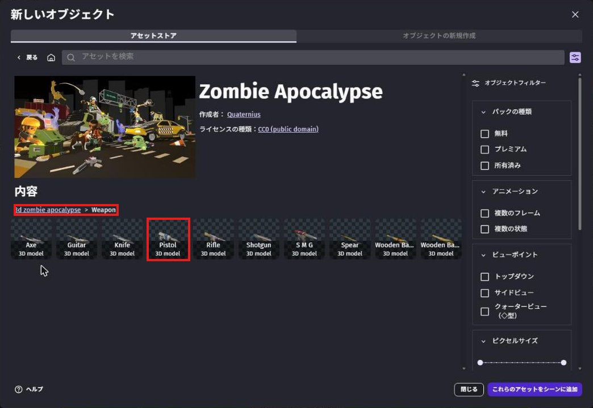
弾はアセットストアではなく、自分で作ります。
「＋」を押して、上の「New object from scratch」（ゼロから作る）を選びます。
「3D Box」（3Dの箱）を選ぶと、色や模様のついた箱が並びます。
黄色い「YellowBlock」を選ぼう。
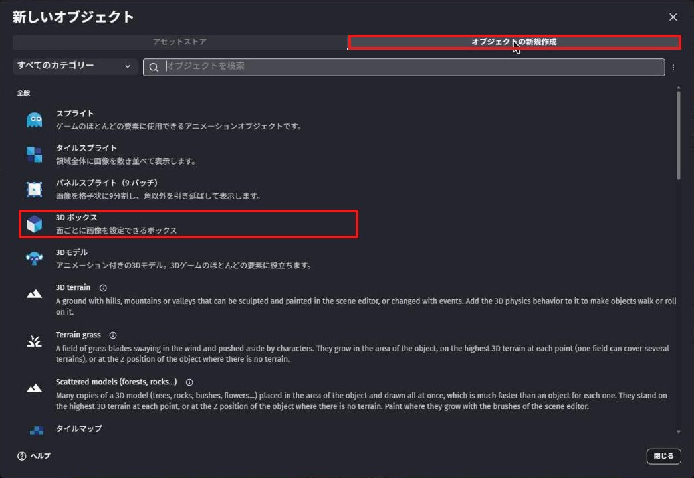
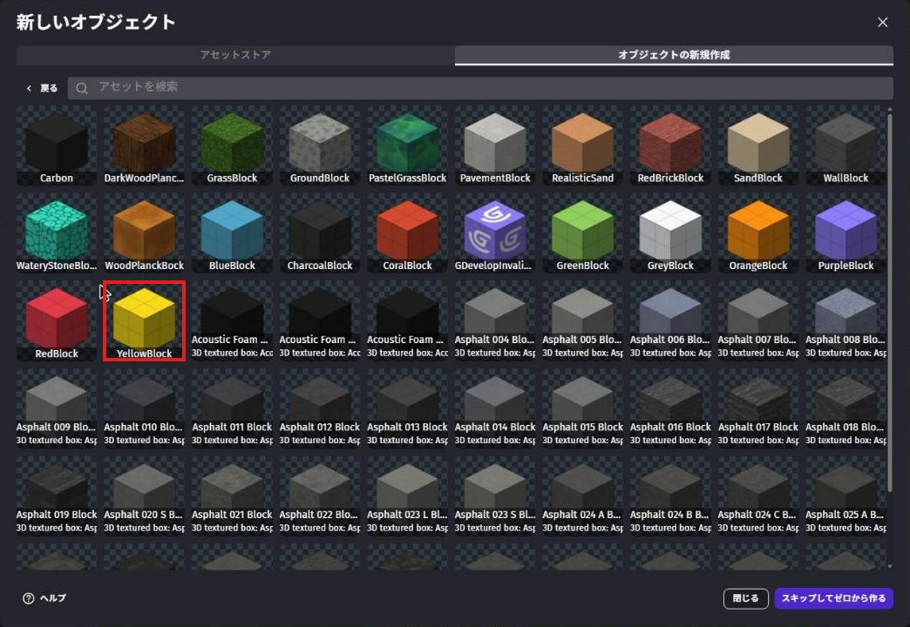
一覧の YellowBlock をクリックしてから F2 キーを押すと、名前を変えられます。
名前を Bullet（弾）にして Enter。
左の「Default size」の Width・Height・Depth を、全部 8 にします。
弾はイベントで作り出すので、シーンには置かなくてOK。
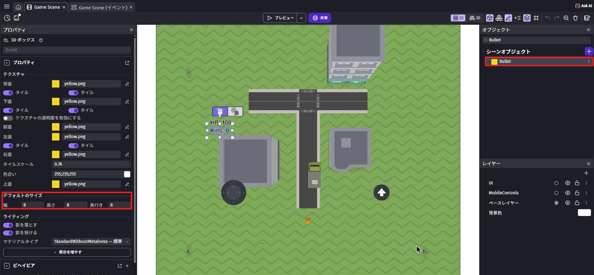
名前を変えるときの注意
右クリックのメニューで「Rename」のすぐ近くに「Delete」（消す）があります。
押しまちがえて、確認の画面で Enter を押すと、オブジェクトが消えてしまいます。
名前を変えるときは、オブジェクトをクリックしてから F2 を使うのが安全です。
3-3. ピストルを主人公に持たせよう
イベントシートで「+ Add...」→「Event group」を選び、新しいグループ Gun を作ります。
グループをクリックしてから Shift + D を押すと、グループの中にイベントができます。
条件は「Variable value」で InCar が False（乗っていない）。
アクションは4つです。
- 「Position」で
Pistolの位置を変える（下の式） Z positionで検索 →「Z (elevation)」、Pistolを30（腰の高さ）angleで検索 →「Angle」、PistolをPlayer.Angle()（主人公と同じ向き）- 「Show」で
Pistol
Position の X と Y には、次の式を入れます。
Player.X() + XFromAngleAndDistance(Player.Angle(), 25)Player.Y() + YFromAngleAndDistance(Player.Angle(), 25)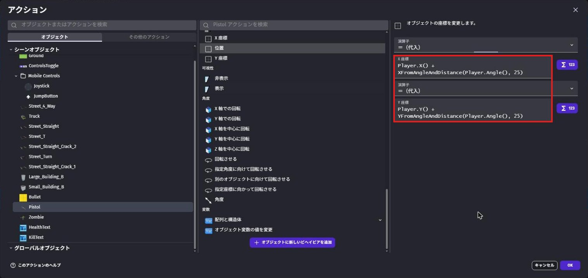
Y のほうは YFromAngleAndDistance を使います。
これで、主人公がどっちを向いていても、ピストルが主人公の 25 だけ前に来ます。
ただ
Player.X() だけにすると、ピストルが体の中にうまってしまいます。
今作ったイベントを右クリックして、「Add」→「Else」を選びます。
（「Add」の右の「›」にマウスをのせると、次のメニューが開きます。）
Else のアクションに「Hide」で Pistol を入れます。
条件は入れなくてOK。
上のイベントが動かないとき（＝トラックに乗っているとき）に、ピストルが見えなくなります。
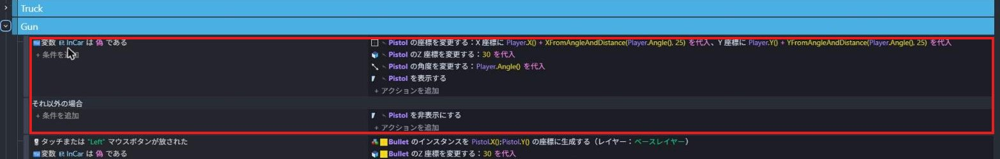
3-4. 弾を撃とう
Else のイベントの下に、新しいイベントを作ります（Else をクリックして Shift + A）。
条件は2つ。
mouse button releasedで検索 →「Mouse button released」、ボタンは「Left (primary)」（左クリック）- 「Variable value」で
InCarが False
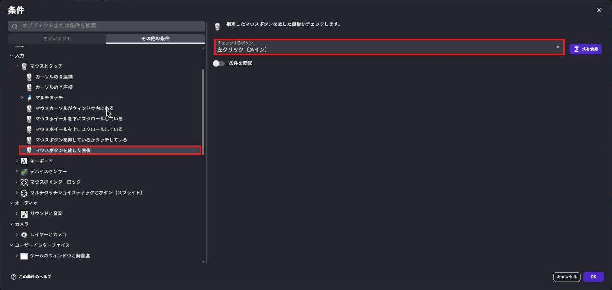
アクションは3つです。
create an objectで検索 →「Create an object」、作るのはBullet、X はPistol.X()、Y はPistol.Y()- 「Z (elevation)」で
Bulletを30 forceで検索 →「Add a force (angle)」、Bullet、Angle はPistol.Angle()、Speed は1500、下のボタンは「Permanent」
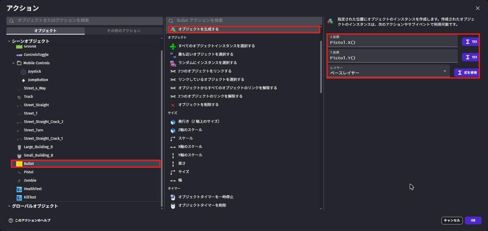
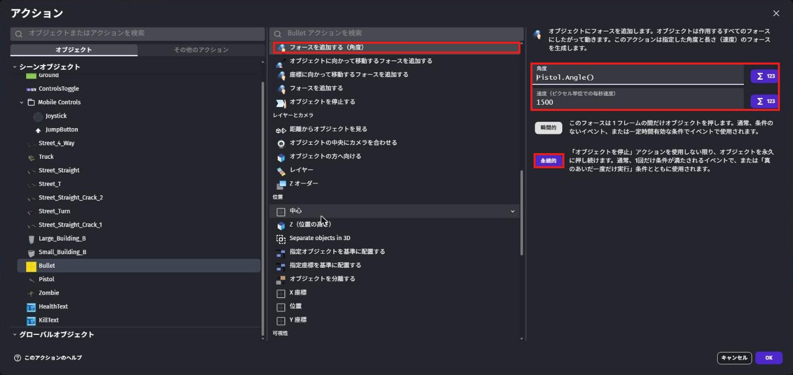
「Instant」は1回だけ押す、「Permanent」は止めるまでずっと押し続けます。
弾はずっと飛んでいってほしいので Permanent にします。
弾を消さないと、撃つたびに弾がどんどん増えて、ゲームが重くなります。
新しいイベントを作り、条件に「Distance between two objects」で Bullet と Player、距離 1500 を入れます。
下の「Invert condition」（条件を反対にする）をONにします。
「1500 以下」が反対になって、「1500 より遠い」という意味になります。
アクションは delete an object で検索 →「Delete the object」で Bullet。
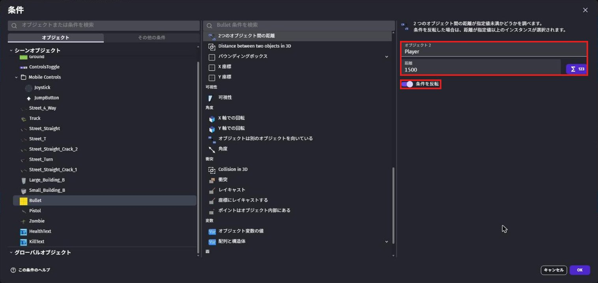
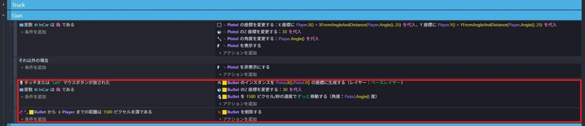
3-5. 撃ってみよう
保存してから Preview します。
主人公の前にピストルが見えていればOK。
画面を左クリックすると、主人公の向いている方向に黄色い弾が飛んでいきます。
A・D で向きを変えながら撃ってみよう。
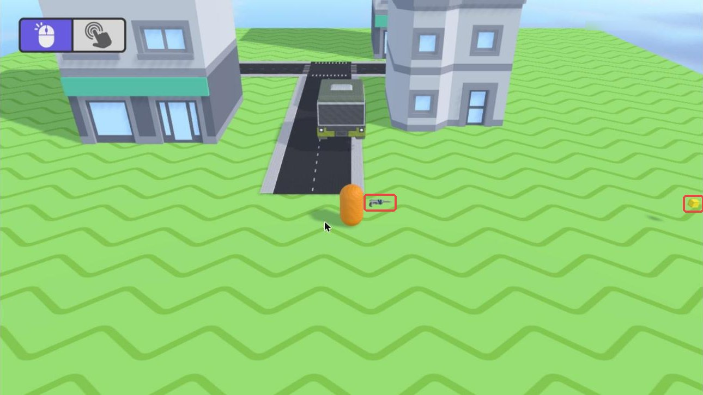
💪 やってみよう
弾の速さ（1500）や大きさ（8）を変えてみよう。
Weapon フォルダの「Rifle」や「Shotgun」にかえてみるのもおもしろいよ。
ヒント
ほかの銃にするときは、Pistol のかわりに新しい銃を追加して、イベントの「Pistol」を全部その名前に変えます。
オブジェクトを右クリックして「Swap assets」を使うと、名前はそのままで見た目だけ入れかえられます。
3-6. 🚨 つまずきポイント集
弾が出ない
原因: 1回目のクリックは、マウスを画面に固定するのに使われる。
直し方: もう一度クリックしてみよう。
それでも出ないときは、Create an object で作るのが Bullet になっているか確かめよう。
弾が出るけど、その場から動かない
原因: フォースが「Instant」になっている。
直し方: Add a force (angle) を開いて、「Permanent」を選びなおそう。
ピストルが見えない
原因: シーンに Pistol を置いていない、または主人公の体の中にうまっている。
直し方: Pistol をシーンに1つ置こう。
Position の式に XFromAngleAndDistance と YFromAngleAndDistance が入っているかも確かめよう。
3-7. ✅ チェックリスト
全部チェックできたら第3章クリア！
🎉 次回は、いよいよゾンビが街にやってくるよ。